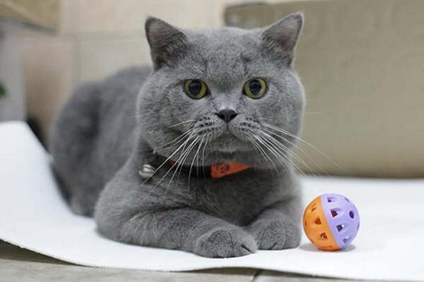

Mèo Ba Tư hay còn gọi là mèo Ba Tư mặt tịt là một giống mèo có nguồn gốc từ Ba Tư. Chúng có bộ lông 2 lớp với lớp lông dài phía ngoài và lớp lông ngắn khá dày ở bên trong. Đuôi của chúng luôn xù nên việc chăm sóc cho bộ lông của giống mèo này là một công việc rất quan trọng nhất. Bạn đừng nên nghĩ đến việc mua về một chú mèo loại này nếu như không thể dành cho chúng một khoảng thời gian hàng ngày để chăm sóc bộ lông bằng các loại lược chuyên dụng. Việc chải lông này ít nhất tốn 10 phút, nhưng quan trọng là phải được thực hiện đều đặn hàng ngày.